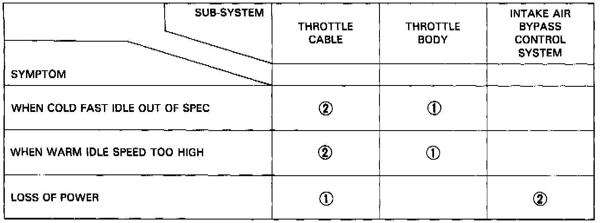
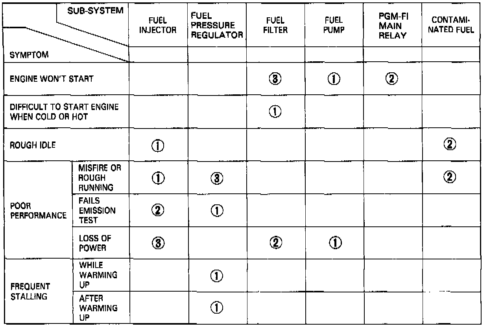

Symptom Related Diagnostic Procedures
Across each row in the chart, the sub-systems that could be sources of a symptom are ranked in the order they should be inspected starting with [1]. Find the symptom in the left column, read across to the most likely source, then refer to that component or system. If inspection shows the system is OK, try the next most likely system [2], etc.

Intake Air system

Fuel System